Ops Manager can be used to deploy and undeploy a service.
With the deploy command, a business user can introduce new services to the grid. These can be either stateful services including a Space and data, or stateless services with business logic.
On the Services screen, click on the deploy option (plus sign) to introduce a new service to the grid.
The Deploy Service menu will display.

Each option is explained below.

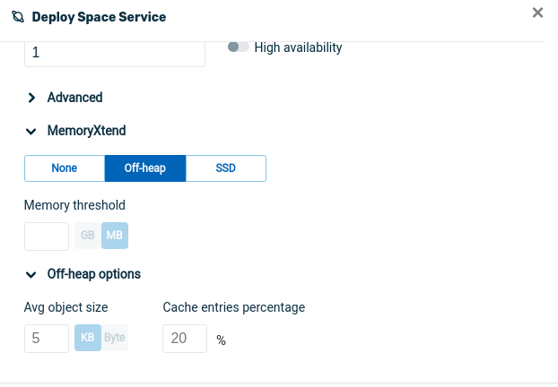
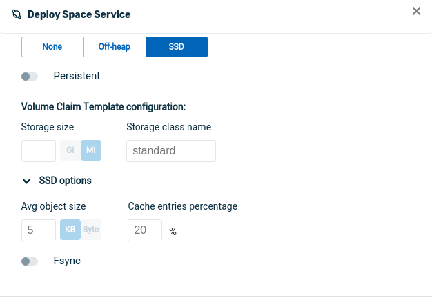
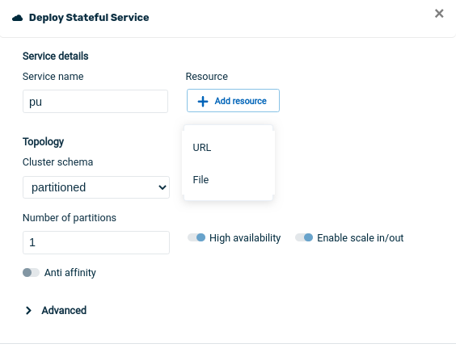
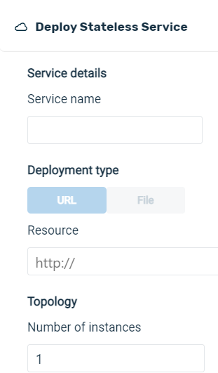
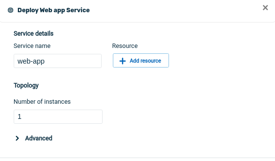
On the Service screen for the service you wish to undeploy, Overview screen, click on Undeploy service to undeploy the service.
After you click on Undeploy, the system will display a screen asking for the Undeploy method:.
The drain mode parameter has the following options:
None — no drain before undeploy
Attempt — undeploy even if drain didn't complete in timeout
Required — undeploy only if drain succeeded in timeout
The Deploy Service menu will display.
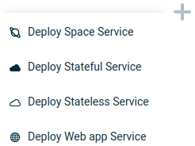
Each option is explained below.
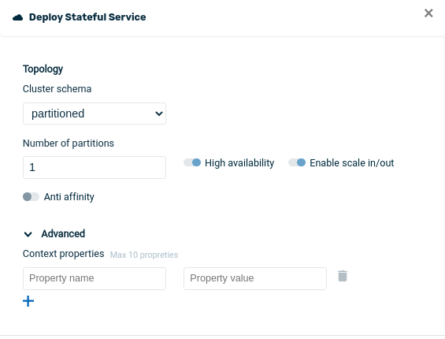
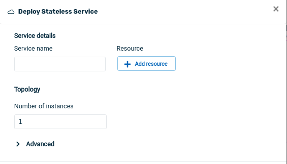
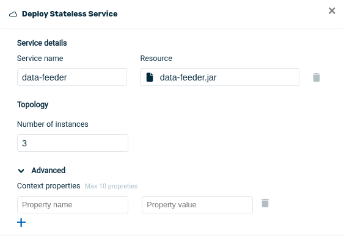
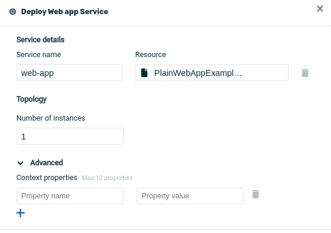
Then we see the Deploy Service screen:

war file for the service. Can be in a local file, or point to a URL.
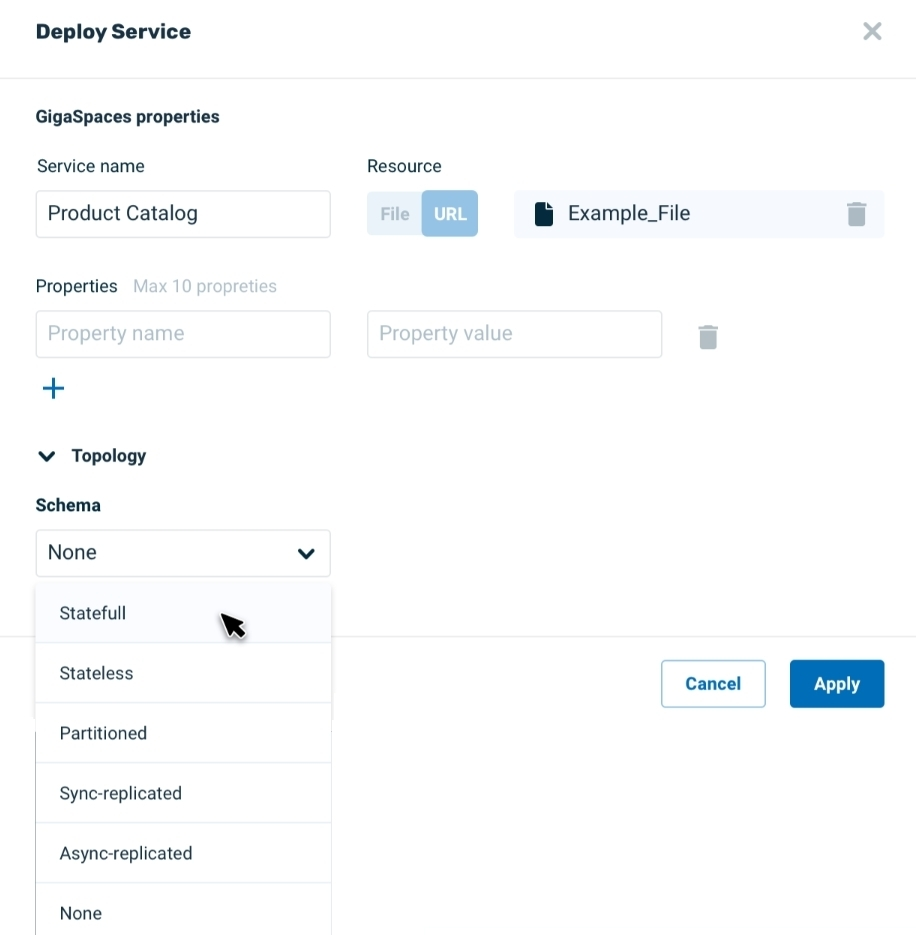
If you click on stateful, you see the following screen. Note that for a stateful service, you will be able to review a list of properties.
Note for RAM units -- It's not clear right now if Kubernetes will be supported in GA. If it is supported, then the RAM units for Kubernetes environment should automatically show as MiB (Mebibytes), not MB.
If in the previous screen you click on stateless, you see this screen:

In this screen, choose the resources that you wish to make available for the service. Note that there is no High availability for a stateless service.
After you click Apply, a message appears in the screen banner, indicating that the service deployment is in progress:
When the service deployment is completed, a message indicating this fact appears in the screen banner.
On the Service screen for the service you wish to undeploy, Overview screen, click on Undeploy service to undeploy the service.
After you click on Undeploy, the system will ask for confirmation, then it will undeploy the service.